Modern Documentation across languages
Rohit Goswami
Created: 2021-07-16 Fri 19:08
Brief Introduction
Hello!
- Find me here: https://rgoswami.me
- Who?
- Rohit Goswami MInstP
- Doctoral Researcher, University of Iceland, Faculty of Physical Sciences
- Rohit Goswami MInstP


Logistics
- All contents are hosted on GitHub
- Slides are in
presentations/SERI2021
- Slides are in
- Questions are welcome after the talk
The Rationale
Reading Code I
main: push rbp mov rbp, rsp mov DWORD PTR [rbp-4], 3 mov eax, 0 pop rbp ret __static_initialization_ and_destruction_0(int, int): push rbp mov rbp, rsp sub rsp, 16 mov DWORD PTR [rbp-4], edi mov DWORD PTR [rbp-8], esi cmp DWORD PTR [rbp-4], 1 jne .L5 cmp DWORD PTR [rbp-8], 65535 jne .L5 mov edi, OFFSET FLAT:_ZStL8 __ioinit
call std::ios_base::Init::Init() [complete object constructor] mov edx, OFFSET FLAT:__dso_handle mov esi, OFFSET FLAT:_ZStL8__ioinit mov edi, OFFSET FLAT:_ZNSt8ios_base4InitD1Ev call __cxa_atexit .L5: nop leave ret _GLOBAL__sub_I_main: push rbp mov rbp, rsp mov esi, 65535 mov edi, 1 call __static_initialization_ and_destruction_0(int, int) pop rbp ret
- But who writes assembly anyway?
Reading Code II
int main () { int D.48918; { int a; a = 3; D.48918 = 0; return D.48918; } D.48918 = 0; return D.48918; } void _GLOBAL__sub_I_main.cpp () { __static_initialization_ and_destruction_0 (1, 65535); }
void __static_initialization_ and_destruction_0 (int __initialize_p, int __priority) { if (__initialize_p == 1) goto <D.48920>; else goto <D.48921>; <D.48920>: if (__priority == 65535) goto <D.48922>; else goto <D.48923>; <D.48922>: std::ios_base::Init::Init (&__ioinit); __cxxabiv1::__cxa_atexit (__dt_comp , &__ioinit, &__dso_handle); goto <D.48924>; <D.48923>: <D.48924>: goto <D.48925>; <D.48921>: <D.48925>: }
- GIMPLE is an internal
gccrepresentation…
Reading Code III
#include<iostream> int main() { int a=3; return 0; }
- Better for most people, still a bit lacking for novices
- Assigning an integer
g++ main.cpp -o file
- Produces a
filebinary which can be run as:
./file
- Output
- There is no output, but an assignment of an integer with value 3 takes place
- What about different languages?
Reading Code IV
- Maybe
gccis just an ugly compiler…
program main integer :: x = 3 + 6 print *, x end program
lfortranhas a nicer intermediate structure
conda create -n lf
conda activate lf
conda install lfortran \
-c conda-forge
lfortran --show-asr consint.f90
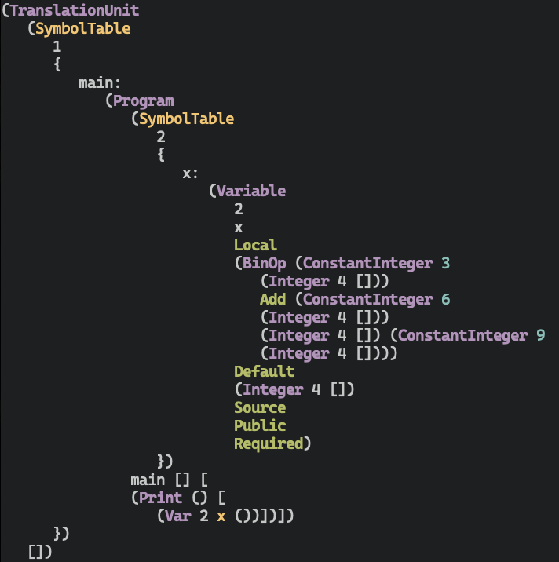
Project Layouts
Language Agnostic Beginnings
Readme.{md,org}- Motivation, rationale, license, installation instructions
LICENSE- Plain text, and preferably an open license
- license-generator is pretty handy for this
.gitignore- Lists files which do not need to be committed; typically generated files
- gibo can be used to generate these
$ git init # Inside project $ gibo macOS Windows Xcode Emacs \ Vim Python C++ \ CMake TeX > .gitignore $ touch readme.md $ license-generator MIT \ --author "Person" $ tree -L 2 . ├── LICENSE ├── docs │ └── pres └── readme.org 2 directories, 2 files
Large Project Structure
- Has a core
- With bindings
- For other languages
- Needs api documentation
- Also user documentation
. ├── api-docs ├── dependencies ├── python-symengine-feedstock ├── symengine ├── symengine-bench ├── SymEngineBuilder ├── symengine.f90 ├── symengine-feedstock ├── symengine.github.io ├── symengine.hs ├── SymEngine.jl ├── symengine-paper ├── symengine.py ├── symengine.R ├── symengine.rb ├── symengine.spkg └── symengine-wheels
Documentation Dissemination
Man Pages
- Great for terminal programs
- Not great for APIs
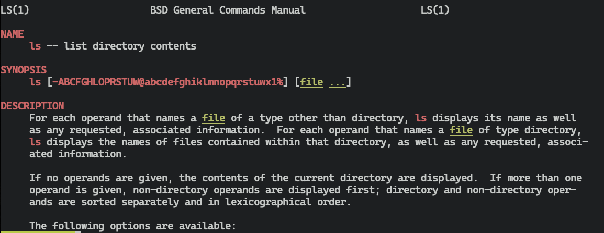
User Manuals
- Can be hard to manipulate
- C++ standard is ≈1800 pages
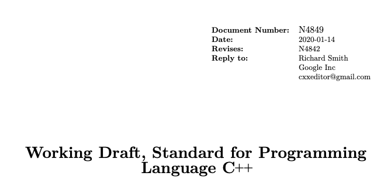
Websites
- How many?
- Must provide metadata about the code
- Community building aspects
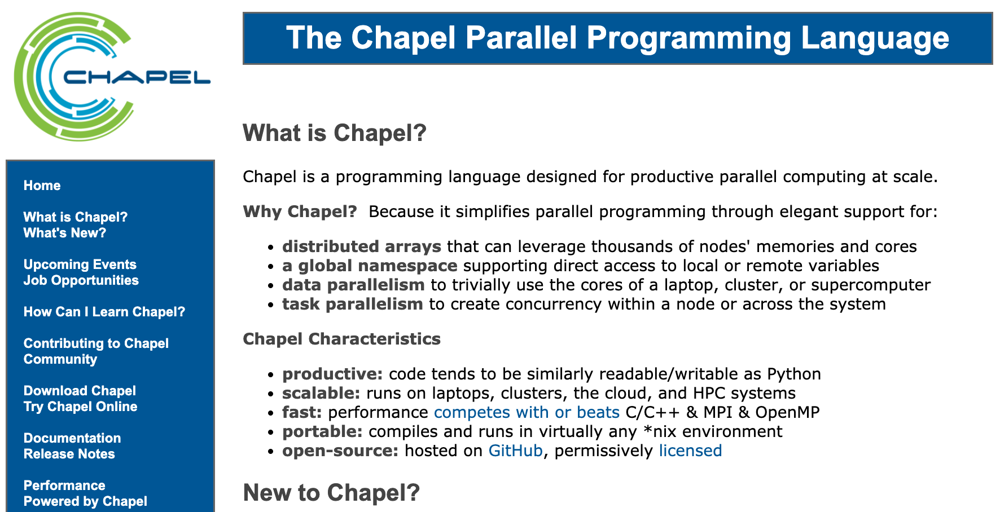
Documentation Insertion Points
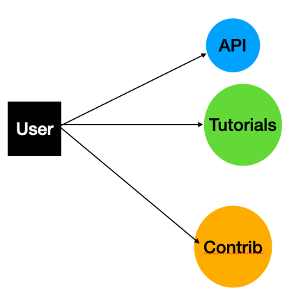
User Perspective
- Tutorials
- Code-along
Developer Perspective
- API documentation
- Code contribution guidelines
Languages
| Language | Package |
| R | pkgdown |
| Python | Sphinx |
| C++ | Doxygen + doxyYoda |
| Julia | Documenter.jl |
| Notebooks / MyST | Sphinx + myst + jupytext |
R
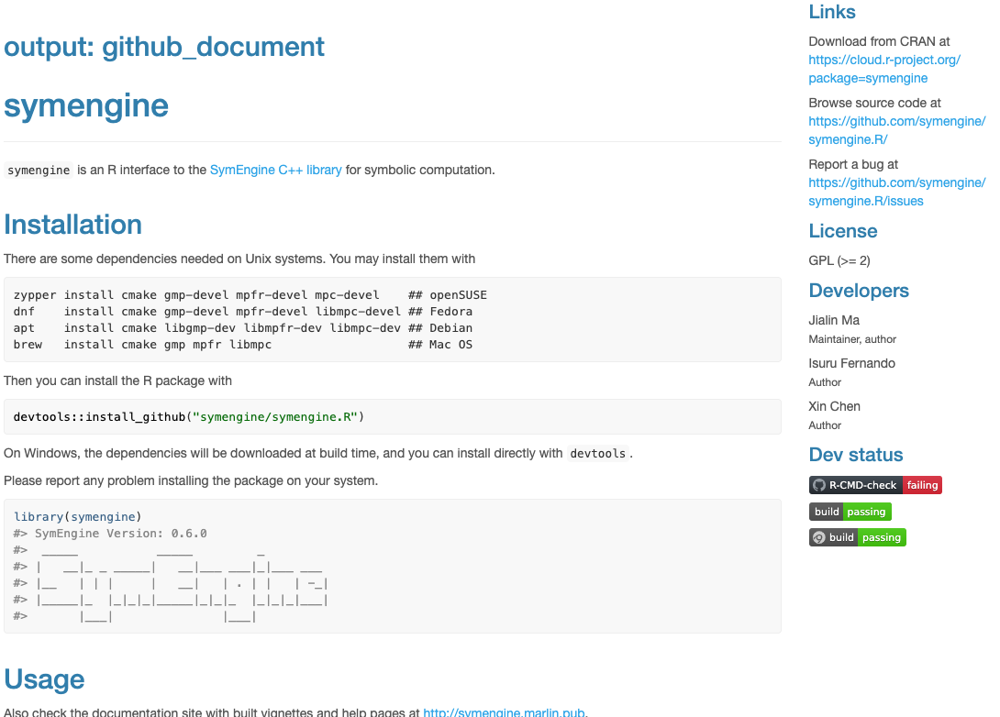
Julia
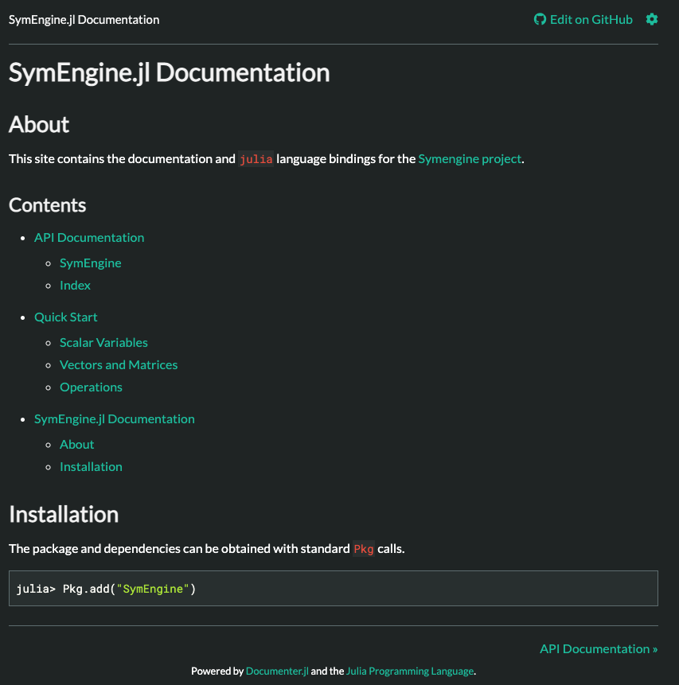
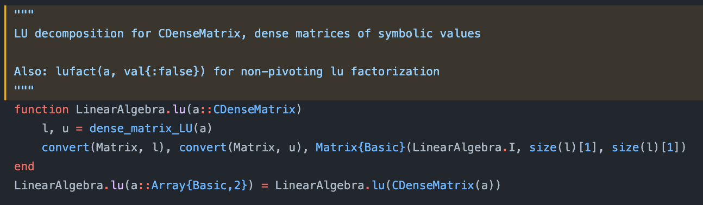
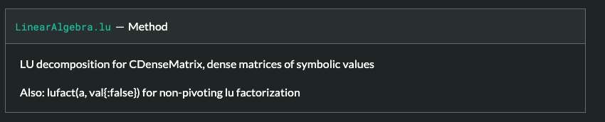
Python
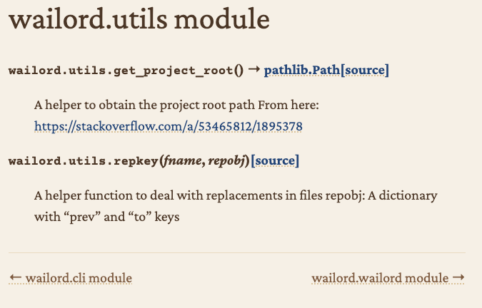
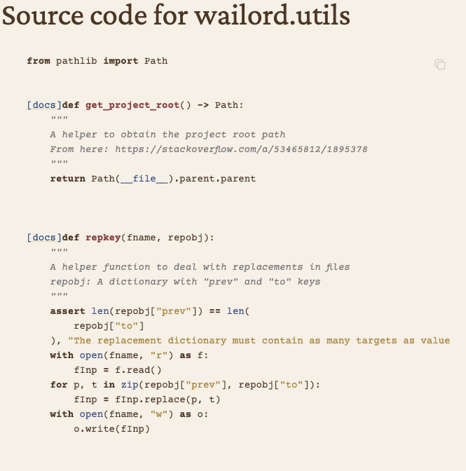
Generic
sphinxis reasonably good for code documentation- Static sites can be leveraged for user-documentation
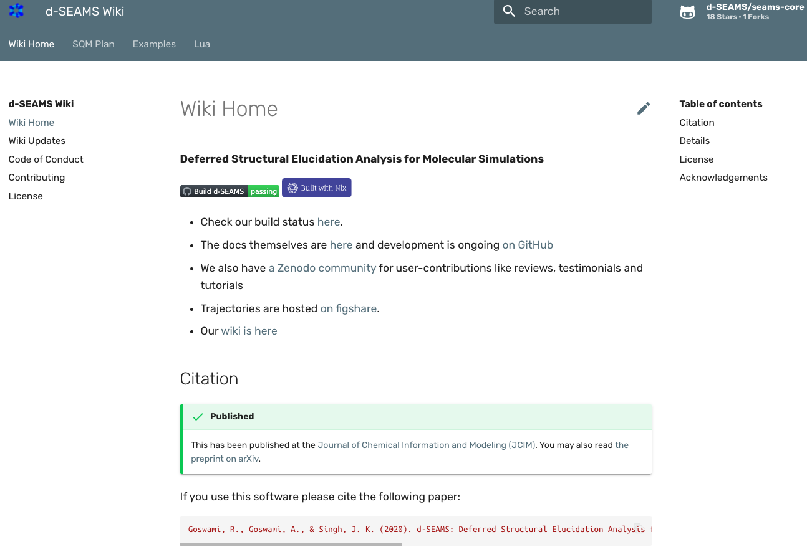
C++
Project Files
/** * @file add.h * @author SymEngine Developers * @date 2021-02-25 * @brief Classes and functions relating to the binary operation of addition * * Created on: 2012-07-11 * * This file contains the basic binary operations defined for symbolic enties. * In particular the @ref Add class for representing addition is * @b declared here, along with the `add` and `substract` functions. */ #ifndef SYMENGINE_ADD_H #define SYMENGINE_ADD_H
Header Files
/** * @brief Create an appropriate instance from dictionary quickly. * @pre The dictionary must be in canonical form. * @see `Mul` for how `Pow` gets returned. * @see `Basic` for the guarantees and expectations. * @param coef the numeric coefficient. * @param d the dictionary of the expression without the coefficient. * @return `coef` if the dictionary is empty (size 0). * @return `Mul` if the dictionary has one element which is a `Mul`. * @return `Integer` if the dictionary has one element which is a * `Integer`. * @return `Symbol` if the dictionary has one element which is a `Symbol`. * @return `Pow` if the dictionary has one element which is a `Pow`. * @return `Add` if the size of the dictionary is greater than 1. */ static RCP<const Basic> from_dict(const RCP<const Number> &coef, umap_basic_num &&d);
Source Files
/** * @details This function ensures that each term in *dict* is in canonical * form. The implementation in the form of a exclusion list (defaults to * true). * * @note **Canonical form** requires the existance of both `coef` and * `dict`, so `null` coefficients and purely numerical (empty dictionaries) * are also not considered to be in canonical form. Also, the ordering is * important, it must be `(coeff, dict)` and **not** `(dict, coeff)`. * * Some **non-cannonical** forms are: * - @f$0 + x@f$. * - @f$0 + 2x@f$. * - @f$ 2 \times 3 @f$. * - @f$ x \times 0 @f$. * - @f$ 1 \times x @f$ has the wrong order. * - @f$ 3x \times 2 @f$ is actually just @f$6x@f$. */ bool Add::is_canonical(const RCP<const Number> &coef, const umap_basic_num &dict) const
Base Doxygen
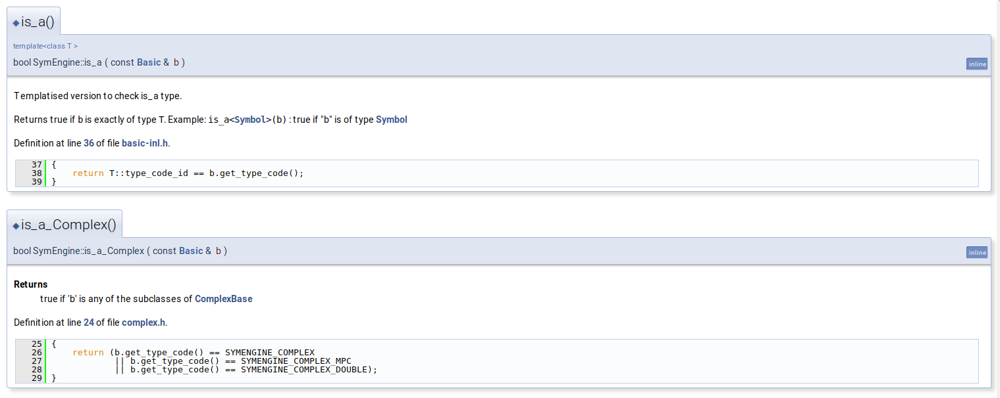
- Is ugly
- Not mobile friendly
Exhale
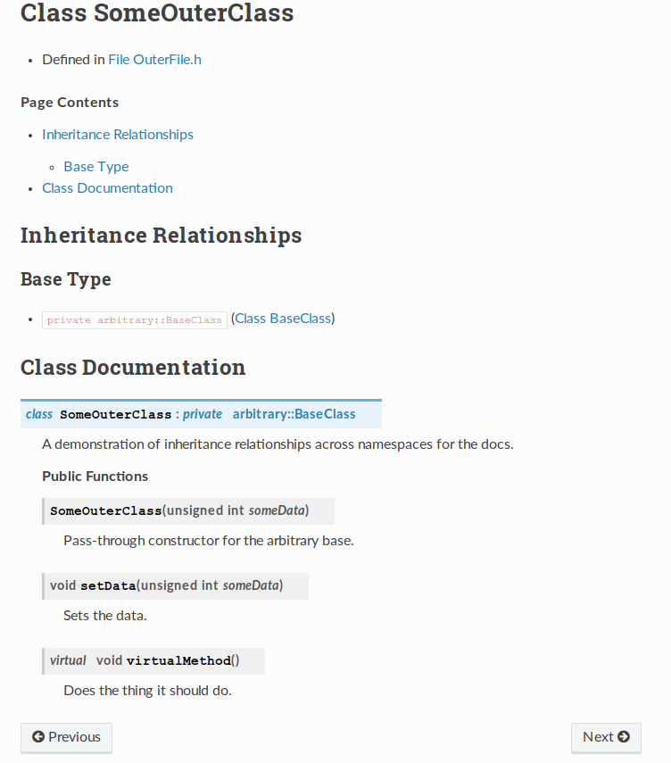
- Cannot include source code
Doxyrest
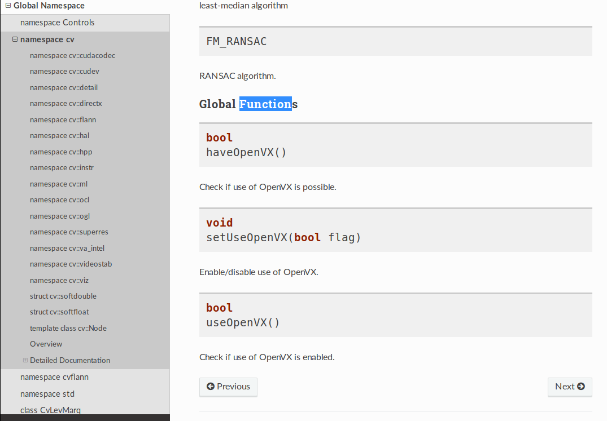
- Includes more structure than exhale
- Can be extended to other source languages
- Has a rather complicated setup
DoxyYoda
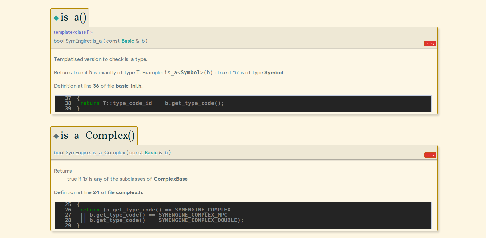
Translations
- At the user level, e.g. with
docusaurus
cat irhpc.github.io/i18n/is/docusaurus-plugin-content-docs/current/intro.md
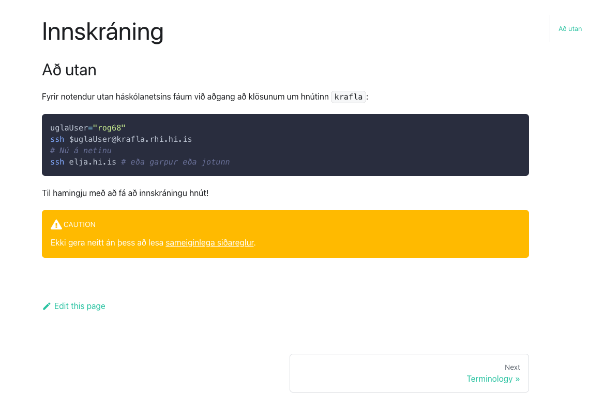
Reviewing Documentation
Documented Fallacies
""" This function adds two numbers """ def sum(a,b): return a*b
Invalidate Often
- Documentation cannot typically be tested
juliaaside
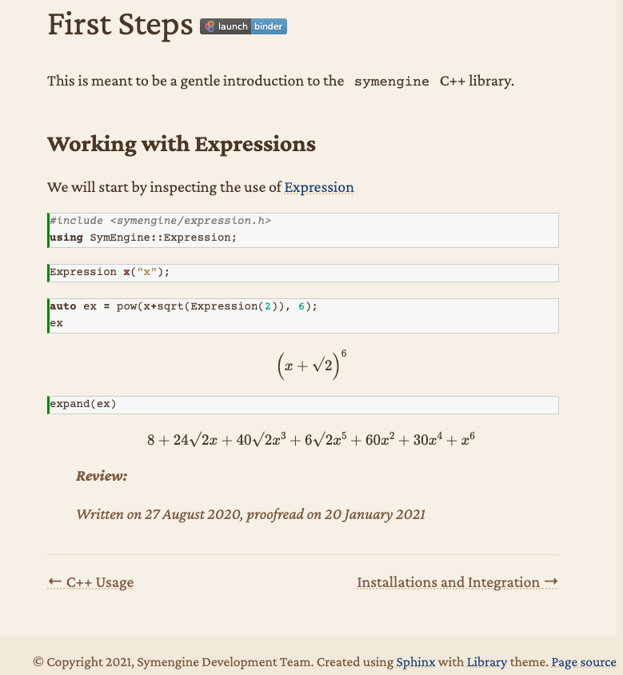
Conclusions
Omitted Topics
- Web development and design
- Including frameworks and UX
- Continuous integration
- How to ensure documentation is coupled to working code
- Benchmarking
- Demonstrating code superiority
- Code Review Practices
- Scrum and teamwork
- Multi-language API
- Where code from different languages are called together
Further Resources
- SymEngine and the Season of Docs
- Describes the present SOTA for documentation practices in the context of a large multi-language project
- d-SEAMS
- A large scientific code [goswamiDSEAMSDeferredStructural2020] project designed with a user-wiki,
Key Takeaways
- Document at every level
- Use the best tools for the job
- Internationalize only where necessary
- User level
- Ensure documentation expires
- Keep provenance
- Ensure a documentation style guide is present
- Lint automatically
The End
Bibliography
- [goswamiDSEAMSDeferredStructural2020] Goswami, Goswami & Singh, D-SEAMS: Deferred Structural Elucidation Analysis for Molecular Simulations, Journal of Chemical Information and Modeling, 60(4), 2169-2177 . doi.
Thanks!
Modern Documentation across languages Rohit Goswami Created: 2021-07-16 Fri 19:08